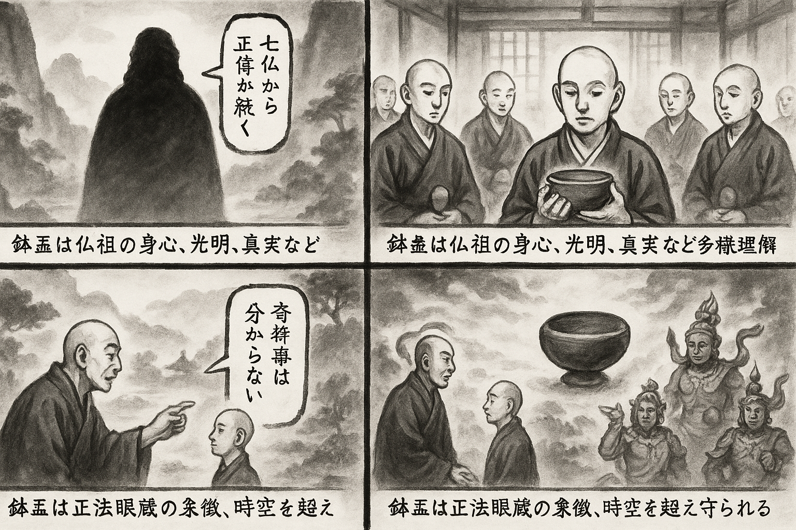

七十五巻 巻一覧
正法眼藏第71 鉢盂
本ページの導入・語彙・深掘り・クイズは tools/regen_volume_intro_from_corpus.py が OpenAI API で生成したものです（入力は当巻冒頭原文の抜粋）。内容はモデル出力のため、重要箇所は必ず原文・教本と照合してください。
出典: https://shomonji.or.jp/zazen/doc/genzou.html
（ローカル生成の全文: 全文ページ）
この巻の位置（導入）
七佛向上より七佛に正傳し、七佛裏より七佛に正傳し、渾七佛より渾七佛に正傳し、七佛より二十八代正傳しきたり、第二十八代の祖師、菩提達磨高祖、みづから神丹國にいりて、二祖大祖正宗普覺大師に正傳し、六代つたはれて曹谿にいたる。
東西都盧五十一代、すなはち正法眼藏涅槃妙心なり、袈裟、鉢盂なり。ともに先佛は先佛の正傳を保任せり。かくのごとくして佛佛祖祖正傳せり。
語彙の足場
- 七佛：仏教において重要な七人の仏を指し、彼らの教えや伝承が後の仏教の発展に影響を与えたとされる。
- 正傳：仏教の教えや法が、正しく伝承されることを指し、信頼できる師から弟子へと受け継がれることが重要視される。
- 鉢盂：仏教僧が食物を受け取るための器であり、仏教の教えや実践において象徴的な意味を持つ。
- 袈裟：仏教僧が着用する衣服で、僧侶の身分や修行の象徴とされ、特にその素材や形状に意味があるとされる。
- 正法眼藏：仏教の真理や教えを象徴する概念で、特に道元の教えにおいて重要な位置を占める。
本文（冒頭・抜粋）
出典はリポジトリ内 doc/正法眼蔵.txt です。原文の参照元: https://shomonji.or.jp/zazen/doc/genzou.html
七佛向上より七佛に正傳し、七佛裏より七佛に正傳し、渾七佛より渾七佛に正傳し、七佛より二十八代正傳しきたり、第二十八代の祖師、
菩提達磨高祖、みづから神丹國にいりて、二祖大祖正宗普覺大師に正傳し、六代つたはれて曹谿にいたる。東西都盧五十一代、すなはち正法眼藏涅槃妙心なり、袈裟、鉢盂なり。ともに先佛は先佛の正傳を保任せり。かくのごとくして佛佛祖祖正傳せり。
しかあるに佛祖を參學する皮肉骨髓、拳頭眼睛、おのおの道取あり。いはゆる、あるいは鉢盂はこれ佛祖の身心なりと參學するあり、あるいは鉢盂はこれ佛祖の飯埦なりと參學するあり、あるいは鉢盂はこれ佛祖の眼睛なりと參學するあり、あるいは鉢盂はこれ佛祖の光明なりと參學するあり、あるいは鉢盂はこれ佛祖の眞實體なりと參學するあり、あるいは鉢盂はこれ佛祖の正法眼藏涅槃妙心なりと參學するあり、あるいは鉢盂はこれ佛祖の轉身處なりと參學するあり、あるいは鉢盂はこれ佛祖の緣底なりと參學するあり。かくのごとくのともがらの參學の宗旨、おのおの道得の處分ありといへども、さらに向上の參學あり。
先師天童古佛、大宋寶慶元年、住天童日（天童に住せし日）、上堂云、記得、僧問百丈（記し得たり、僧百丈に問ふ）、如何是奇特事（如何ならんか是れ奇特の事）。百丈云、獨坐大雄峰。
大衆不得動著、且教坐殺者漢。今日忽有人問淨上座、如何是奇特事。只向他道、有甚奇特。畢竟如何、淨慈鉢盂、移過天童喫飯（大衆、動著することを得ざれ、且く者漢を坐殺せしめん。今日忽ちに人有つて淨上座に問はん、如何ならんか是れ奇特の事と。ただ他に向つて道ふべし。甚の奇特か有らん。畢竟如何。淨慈の鉢盂、天童に移過して喫飯す）。
しるべし、奇特事はまさに奇特人のためにすべし。奇特事には奇特の調度をもちゐるべきなり。これすなはち奇特の時節なり。しかあればすなはち、奇特事の現成せるところ、奇特鉢盂なり。これをもて四天王をして護持せしめ、諸龍王をして擁護せしむる、佛道の玄軌なり。このゆゑに佛祖に奉獻し、佛祖より附囑せらる。
佛祖の堂奥に參學せざるともがらいはく、佛袈裟は、絹なり、布なり、化絲のをりなせるところなりといふ。佛鉢盂は、石なり、瓦なり、鐵なりといふ。かくのごとくいふは、未具參學眼のゆゑなり。佛袈裟は佛袈裟なり、さらに絹、布の見あるべからず。絹布等の見は舊見なり。佛鉢盂は佛鉢盂なり、さらに石瓦といふべからず、鐵木といふべからず。
おほよそ佛鉢盂は、これ造作にあらず、生滅にあらず。去來せず、得失なし。新舊にわたらず、古今にかかはれず。佛祖の衣盂は、たとひ雲水を採集して現成せしむとも、雲水の籮籠にあらず。たとひ草木を採集して現成せしむとも、草木の籮籠にあらず。その宗旨は、水は衆法を合成して水なり、雲は衆法を合成して雲なり。雲を合成して雲なり、水を合成して水なり。鉢盂は但以衆法、合成鉢盂なり。但以鉢盂、合成衆法なり。但以渾心、合成鉢盂なり。但以虛空、合成鉢盂なり。但以鉢盂、合成鉢盂なり。鉢盂は鉢盂に罣礙せられ、鉢盂に染汚せらる。
いま雲水の傳持せる鉢盂、すなはち四天王奉獻の鉢盂なり。鉢盂もし四天王奉獻せざれば現前せず。いま諸方に傳佛正法眼藏の佛祖の正傳せる鉢盂、これ透脱古今底の鉢盂なり。しかあれば、いまこの鉢盂は、鐵漢の舊見を覰破せり、木橛の商量に拘牽せられず、瓦礫の聲色を超越せり。石玉の活計を罣礙せざるなり。碌塼といふことなかれ、木橛といふことなかれ。かくのごとく承當しきたれり。
正法眼藏鉢盂第七十一
爾時寛元三年乙巳三月十二日在越宇大佛精舍示衆
寛元乙巳七月廿七日在大佛寺侍司書寫 懷弉
図解（4コマ・AI生成）
教義の根拠は本文・出典に従い、漫画は比喩の補助に留めてください。

深掘り（読解の手掛かり）
- 七佛から二十八代の伝承が行われたことが示されている。
- 菩提達磨が重要な師として位置づけられ、彼の教えが後の曹洞宗に影響を与えた。
- 鉢盂は仏教の実践において重要な象徴であり、様々な解釈が存在する。
- 正法眼藏は仏教の真理を保持する重要な概念であり、伝承の過程が強調されている。
確認（形成評価）
各設問の下の「採点」で正誤を表示します（ブラウザ内のみ。ログは送りません）。